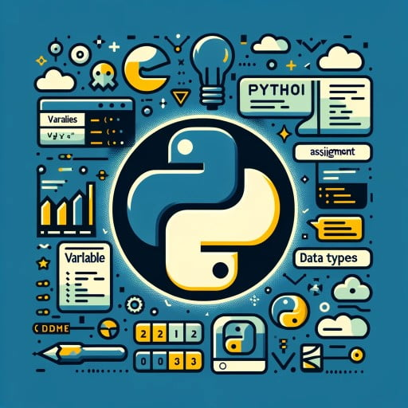

In these projects, I have used Covid Deaths Data and Nashville Housing Data for Data Exploration and Data Cleaning in SQL. Additionally, I have created several other projects that use the Data Definition Language(DDL), Data Manipulation Language(DML), Data Query Language(DQL), Data Control Language(DCL) and Triggers to communicate with databases for user analysis.

The Python projects automate data analysis and stock price prediction using machine learning models like Linear Regression, Random Forest, and LSTM. They include features for data scraping, cleaning, model training, and evaluation, all accessible through intuitive graphical interfaces.
In these projects, I have worked on cleaning and exploring the Bicycle Sales. I have worked on creating pivot tables to draw graphs using clustered bar chart, stacked line chart with markers, pie chart, map chart and created dashboards.

In this project, I have created an interactive dashboard for Bike Sales data and analyzed revenue per month, year, category, sales rep, state, store and the top customers of the bike company.
In this project, I have created a dashboard for the Data Professional Survey analyzing the country of the survey takers, their favorite programming language, average salary by the job title, happy with work/life balance, happiness with salary, etc. I have used clustered bar graphs, stacked column chart, donut chart, gauge, etc. to visualize the data.
The provided R scripts focus on time series forecasting for financial data, using models like ETS, ARIMA, and VAR. They include data preparation steps, such as converting daily data to monthly averages and extracting end-of-month values, followed by visualization with ggplot2.